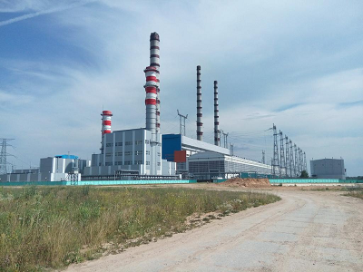
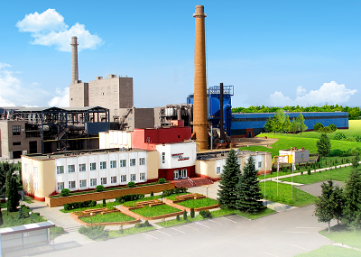
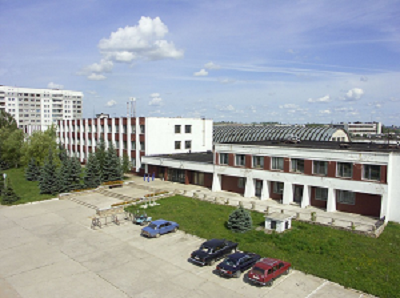
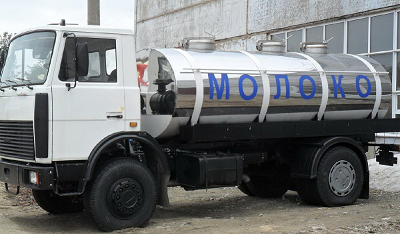

Лукомльская ГРЭС
Луко́мльская ГРЭС — тепловая электростанция расположенная в городе Новолукомль Витебской области (Беларусь).Ордена „Знак Почета" Лукомльская ГРЭС (Государственная районная электрическая станция) - флагман электроэнергетики Республики Беларусь. Её проектная мощность 2400 МВт.Является филиалом Республиканского унитарного предприятия электроэнергетики «Витебскэнерго» Белорусского государственного производственного объединения «Белэнерго», Министерства энергетики Республики Беларусь.Строительство Лукомльской ГРЭС было начато в 1964 году по проекту Рижского отделения «Теплоэлектропроект». Строительство осуществлялось в две очереди строительными и монтажными организациями Минэнерго СССР и привлеченных Министерств. Генеральный подрядчик – строительное управление Лукомльской ГРЭС, входящее в систему треста «Белэнергострой».Энергоблоки I очереди вводились в эксплуатацию с декабря 1969 г. по сентябрь 1971 г., энергоблоки II очереди - с декабря 1972 г. по август 1974 г.На I очереди электростанции установлено четыре дубль-блока по 300 МВт, на II очереди - четыре моноблока по 300 МВт.
Завод керамзитового гравия
Самый крупный завод по производству керамзита в Беларуси – это, конечно же, ОАО "Завод керамзитового гравия г.Новолукомль". Этот завод не только самый крупный производитель керамзита в Беларуси, но и в Европе. Продукция этого завода широко известна за пределами Беларуси, в том числе и российскому потребителю. Благодаря своему отличному качеству «новолукомль керамзит» очень востребован как внутри страны, так и на российском рынке. Особой популярностью у потребителей пользуются керамзитобетонные блоки термокомфорт этого завода.
"Этон"
Завод основан в 1975 году. В 1993 получил статус конверсионного предприятия и приступил к перепрофилированию производства. На сегодняшний день мы являемся акционерным обществом открытого типа. Специализируемся на экономии теплоэнергии. Выпускаем энергосберегающее и сопутствующее сантехническое оборудование с гарантийным сроком 4 года. Производим обследование объектов, проектные работы, монтаж и наладку энергосберегающего оборудования и приборов учета, что в последствии позволяет экономить теплоэнергию: в жилом секторе около 14%; в социальной сфере и на промышленных предприятиях до 40%. Имеем необходимые сертификаты, разрешения, лицензии. В 2006 году для удобства работы на рынках Российской Федерации нами в г. Москве учрежден филиал ООО «Этон-Энерго».
Хлебозавод

Новолукомльского хлебозавода началась 16 октября 1978 года. В этот день была пущена первая линия и выпущена первая продукция.1996 г. является знаковым для истории предприятия, была смонтирована и введена в строй линия по производству пряников и печенья. С момента пуска линии освоено более 70 наименований пряников и 40 наименований печенья, которые пользуются спросом не только у покупателей г. Новолукомля, но и за пределами Витебской области. Специалистами предприятия разработано более 40 рецептур на пряники, печенье и сладости мучные.С целью снижения энергоемкости производства продукции в 2002 г. был произведен перевод котельной и печей на природный газ.С 2005 года началась реконструкция предприятия, существенно изменились условия производства: заменена электрическая печь П-104 на газовую печь Г4-ХПН-25, закуплено и смонтировано тестомесильное оборудование, дежеопрокидыватель, тестоделитель, дежи. Проведение этих мероприятий, направленных на техническое перевооружение позволило начать выпуск подового хлеба.В 2006 г. газовая печь Г4-ХПН-25 была модернизированна с целью выпечки на ней формовых хлебов, что позволило уйти еще от одной электрической энергоемкой печи.В 2007 г. была заменена электрическая печь А2-ХПЯ-25 на две газовые ротационные печи РТ-150G, для выпуска булочных изделий. Одним из требований современного потребительского рынка является качественная упаковка, поэтому в 2007 г. был приобретен фасовочно-упаковочный автомат «Питпак-2В» для пряников и печенья, а также полуавтоматическая упаковочная линия ItalDibiPack 5540 для формовых и подовых хлебов.Во 2 кв. 2008 г. была приобретена отсадочная машина И8-МФУ/600 для производства пряников с начинкой. С момента пуска машины освоен выпуск четырех наименований пряников с различными термостабильными наполнителями.В 2009 г. была смонтирована и введена в эксплуатацию газовая печь Г4-ХП-2,1-25 для выпуска подовых и формовых сортов хлеба.В 2010 г. взамен электрической печи ПИК-8 линии пряников и печенья была смонтирована и введена в эксплуатацию газовая печь Г4-КПГ-06.В настоящее время ассортимент выпускаемых изделий составляет порядка 130 наименований, в т.ч. 50 хлебобулочных и 80 кондитерских изделий. Ежедневно выпускается более 40 наименований изделий.Продукция хлебозавода постоянно участвует в областных, Республиканских и международных конкурсах, таких как «Лучшие продовольственные товары РБ», «Ласунак», «Национальные традиции в хлебопечении» и отмечается всевозможными наградами.Розничная сеть предприятия представлена двумя фирменными магазинами «Колос» и «Каравай».
Молокозавод
Запущен в эксплуатацию в июне 1972 года. Производственная мощность – 13, 4 тонн цельномолочной продукции за смену. В сезон массовой переработки на завод поступает до 125 тонн молока в сутки. Вся выпускаемая продукция: молоко, кефир сметана, творог, творожная масса, сливки питьевые, творог зерненный «Лукомльский» и творог с наполнителем реализуется через торговую сеть г.Новолукомля, г.Чашники, Чашникского района, г.Полоцка, г.Витебска, Витебской области, г.Минска и Минской области. В 2008 году установлена болгарская линия по производству творога зерненного «Donido», произведена замена молочной линии.